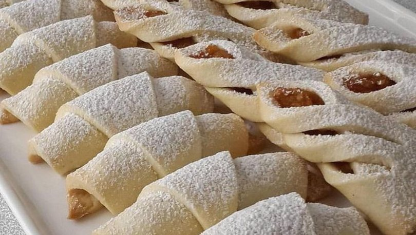

ELMALI KURABİYE TARİFİ

MALZEMELER
- 3 su bardağı un
- 250g teryağ veya margarin
- 1 yemek kaşığı yoğurt
- 1 çay kaşığı kabartma tozu
- 1 kahve fincanı pudra şekeri
- 3 adet elma
- 1 tatlı kaşığı tarçın
- 1 çay bardağı şeker
HAZIRLANIŞI
- Elmaları soyup rendeleyelim.Elma, tarçın ve şekeri tencereye alıp orta ateşte elmalar suyunu salıp çekene kadar pişmeye bırakılır.
- Yoğurma kabına un hariç malzemeler koyulur ve güzelce karıştırılır.
- Ardından yavaş yavaş un ilave ederek ele yapışmayan yumuşak bi hamur elde edilir.
- Hamurun içine hazırladığımız elma harcını koyalım ve dilediğimiz gibi şekillendirelim.
- Önceden ısıtılmış 170 derece fırında 20 dk pişirilir.
- Kurabiyeler souduktan sonra üzerine pudra şekeri serpebilirsiniz.
- AFİYET OLSUN...